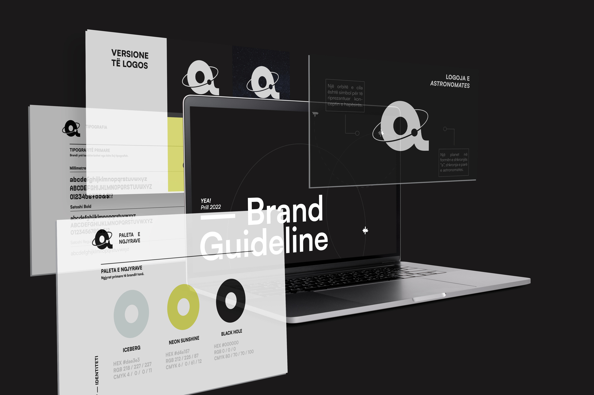

Hello world !
Nice to meet you - I'm Irsa Bushati, a student @ HTL Shkodër and aspiring designer ↗.
01
about me
It all started in 2017, when I got into the Austrian upper secondary technical and vocational
college for informatics "Peter Mahringer" in my hometown, Shkodër. While having to learn about
technology overall, software and hardware, I started showing great interest on them. I am at the
moment getting specialized for Media Technology which includes: web & app development, database, graphic
design and photography. I chose MT because I can find myself in all of the key subjects, I am especially
passionate of being able to combine my creative ideas with my development skills to create unique websites.
I like to engage myself in various competitions, especially the innovative entrepreneurship type, thus having won prices in some of them, such as: Digibonus of JugendInnovativ, 2nd place businessplan @ YEA! (Astronomates), UPSHIFT 2022 etc. I would name these as my biggest accomplishments till now.
At the moment, I am an intern @ Deloitte Digital, convinced to improve my skills in HTML, CSS and JavaScript, as well as gain experience with new technologies such as React.
I like to engage myself in various competitions, especially the innovative entrepreneurship type, thus having won prices in some of them, such as: Digibonus of JugendInnovativ, 2nd place businessplan @ YEA! (Astronomates), UPSHIFT 2022 etc. I would name these as my biggest accomplishments till now.
At the moment, I am an intern @ Deloitte Digital, convinced to improve my skills in HTML, CSS and JavaScript, as well as gain experience with new technologies such as React.

02
portfolio

'Astronomates' Brand Identity - YEA! 2022

'Persona' Magazine design

'Pain De Lapin' Concept & Brand Identity